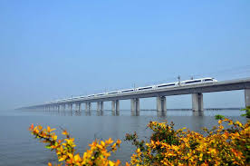

<section>
    <h2>Chiny</h2>
    <div class="text-format">
        <p>...</p>
        
    </div>
    <table>
        <tr>
            <td><li>Długość: 164,8 km</li>
            <li>Typ: Most kolejowy</li>
            <li>Lokalizacja: Linia szybkiej kolei Pekin-Szanghaj</li>
            <li>Najdłuższy most na świecie, obsługujący linie szybkich pociągów w Chinach. Przebiega przez rozległe tereny wiejskie, rzeki, jeziora i miasta.</li></td>
            <td></td>
        </tr>
        <!-- Additional rows as needed -->
    </table>
</section>